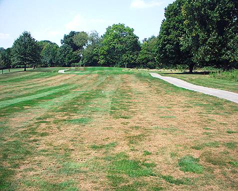

My junior year at the University of Kentucky I was fortunate enough to work with Dr. Mark L. Farman and a team of a mix of biology and computer science majors to assemble different strains of a fungus Pyricularia Oryzae's genome that was infecting different types of host plants (mainly grains and grasses). During this process I was able to get hands on experience working with very large sets of data in a coordinated team environment, processing billions of nucleotides worth of data. To do this, our team utilized the University of Kentucky's super computer, linux OS, github, DNA assembly software, scripting, on top of clear and concise communication.
Pyricularia Oryzae is a species of fungus that infects grasses and grain plants causing a host of different diseases such as rice blast, wheat blast, and grey leaf spot. The fungal genome I was assembling was found on an Festuca Arundinacea tall grass in Uruguay. Each team member had to assemble a Pyricularia Oryzae genome sourced from different host plants that the fungus was infecting. The goal of this was so that once we have assembled the sequenced data (our fungal genomes), we would compare and contrast the data in hopes to gain insights on the origins of this fungus, what genes were common among certain host species, and even fungal evolution as a whole. Our work would go on to support Dr. Farman's research which he scheduled to publish our findings in December of 2024.
If you would like to know more about the process of how we did this, check out my github page here
Back